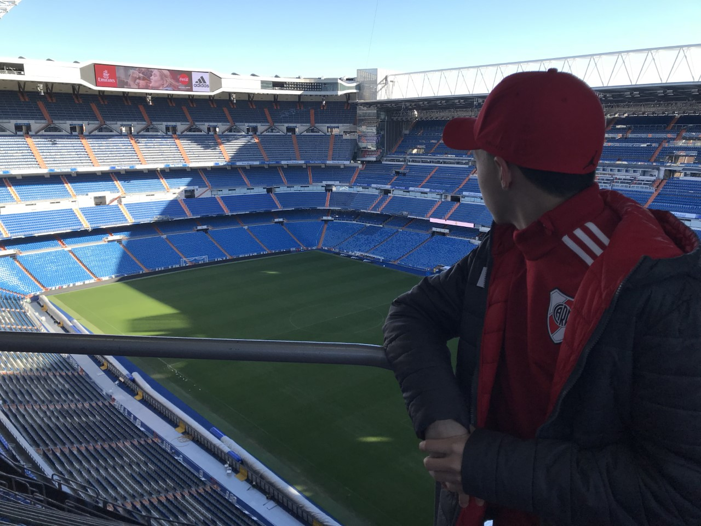
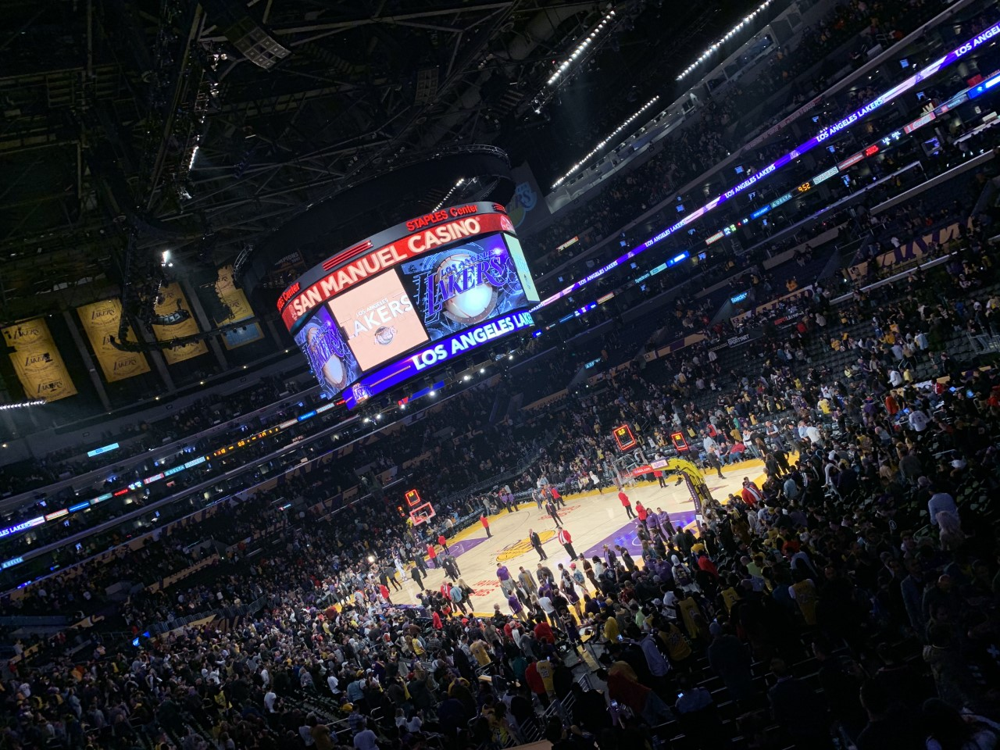
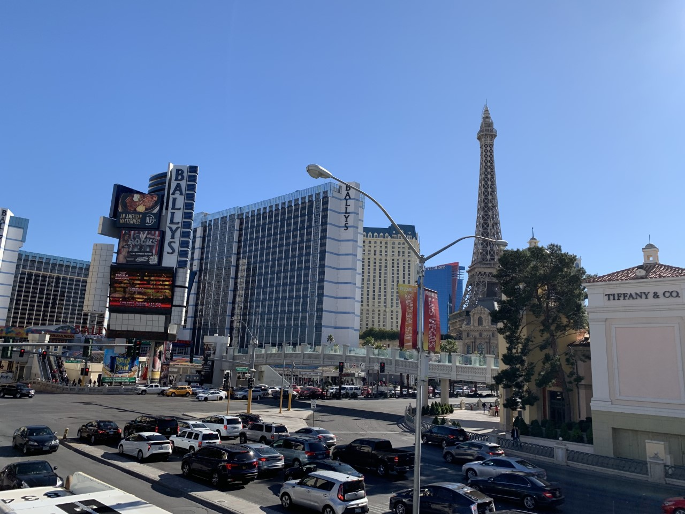

Decidí elegir esta foto ya que creo que representa una de mis grandes pasiones y uno de los sueños que pude cumplir al mismo tiempo. Por un lado el fútbol un deporte que me acompaño mucho durante mi niñez, mientras crecía lo practique durante muchos años, hasta que tuve que colgar los botines ;(. Por otro lado el viajar y conocer Europa fue uno de los momentos mas importantes y lindos de mi vida donde pude conocer lugares hermosos como el estadio del Real Madrid. 
Esta foto la seleccione porque fue una de las pasiones que conocí mas de grande y también pude tener la posiblidad de ver un partido en vivo en uno de mis viajes. En un momento en el estaba sin ninguna pasión, encontre el basquet como un nuevo deporte el cual me llamaba mucho la atención y cada vez me gusto más y más, por lo que fui adentrándome y luego de mucho tiempo pude llegar a ver un partido de la NBA en vivo y en directo conociendo uno de los estadios más lindos en los que estuve sin lugar a dudas como es el STAPLES Center 
Y esta última foto la seleccione por mi mayor pasión que es viajar y justamente en el destino que más me gusto conocer como es Las Vegas, un lugar muy pero muy raro pero teniendo una especialidad única. Mi sueño a futuro es poder seguir conociendo muchos lugares del mundo y poder viajar mucho durante la mayor cantidad de tiempo que pueda. Aquel que piense que Las Vegas son solo casinos y hoteles esta equivocado y le recomiendo que si puede conozca esa ciudad. 


Conozcámosnos en redes ;)